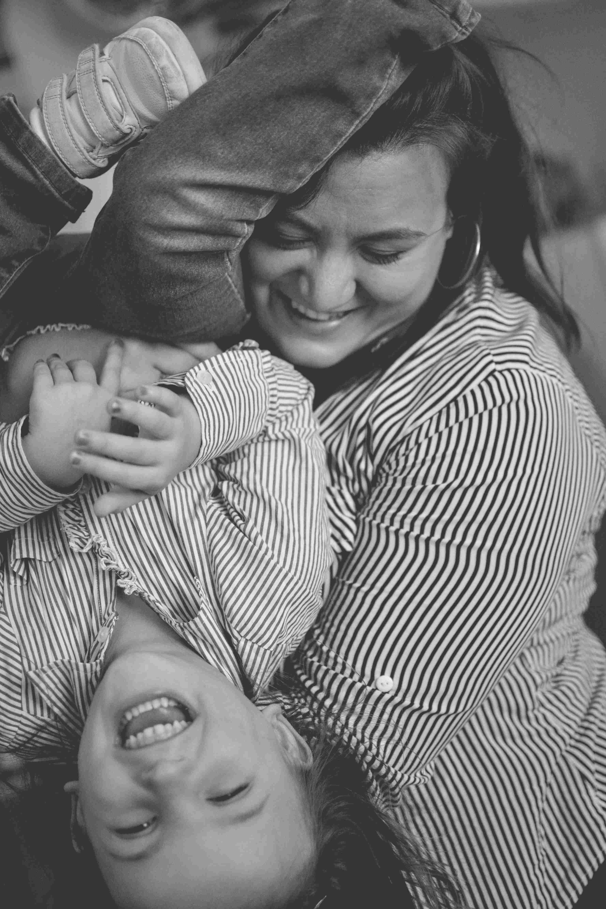

Welcome to "Edelweiss Fotografía"

Welcome to "Edelweiss Fotografía," the home of exceptional photography that captures the essence of your life's most precious moments. As you step into our world, we invite you to embark on a journey filled with artistry, emotion, and unforgettable memories. Our passion lies in immortalizing your stories through breathtaking photographs, preserving the joy, love, and connection that define your family and special events.
At "Edelweiss Fotografía," we understand that life is a collection of beautiful moments, and we are here to ensure that those moments last forever. Our services are dedicated to individuals and families who seek the expertise of a professional photographer to encapsulate their treasured memories. Whether it's documenting significant milestones such as family portraits, maternity photos, newborn sessions, or capturing the growth of your children over time, we are committed to freezing these precious moments in time. Our images are more than just pictures; they are visual narratives that celebrate the milestones and bring your loved ones together.
Our Services for Intimate Gatherings and Small Events
Beyond families, our website warmly welcomes individuals and groups who are planning intimate gatherings and small events that deserve to be remembered for a lifetime. Whether you're organizing a birthday party, a baby shower, an anniversary celebration, or any other special occasion, we believe in the power of photography to immortalize the laughter, tears of joy, and heartfelt moments that unfold during these events. Our goal is to capture the essence of these intimate gatherings, ensuring that the emotions and memories are cherished for years to come.
At our core, we understand that these occasions are a reflection of your unique story and the love shared with your loved ones. Our experienced photographers are dedicated to capturing the candid moments, the genuine interactions, and the details that make your event truly special. We believe that each gathering is an opportunity to create lasting memories and our commitment is to provide you with a visual narrative that brings those memories to life.
From the moment you enter the venue to the heartfelt speeches, from the joyous dance floor to the shared laughter around the table, we will be there to document every precious moment. Our approach combines artistic vision with a keen eye for detail, ensuring that we capture the ambiance, the emotions, and the connections that make your event unique. We believe that photography has the power to transport you back in time, evoking the same feelings and emotions that you experienced on that special day.
By choosing us as your photography partner, you are entrusting us with the responsibility of preserving the legacy of your intimate gathering. We take this responsibility seriously and strive to exceed your expectations in every aspect. Let us be a part of your celebration, capturing the beauty and essence of your event, so that you can relive those cherished memories and share them with generations to come.